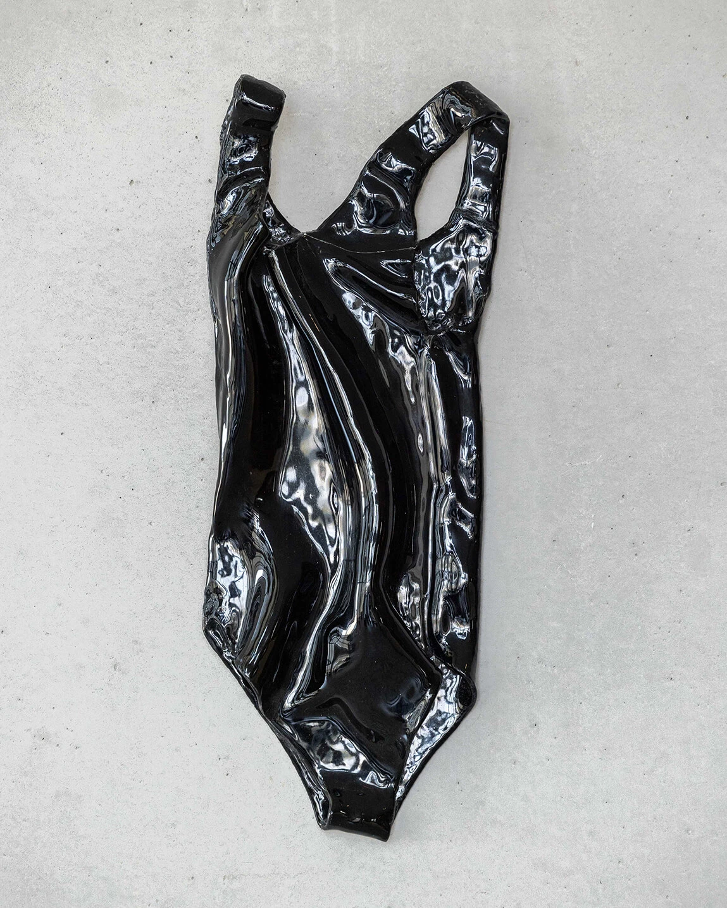
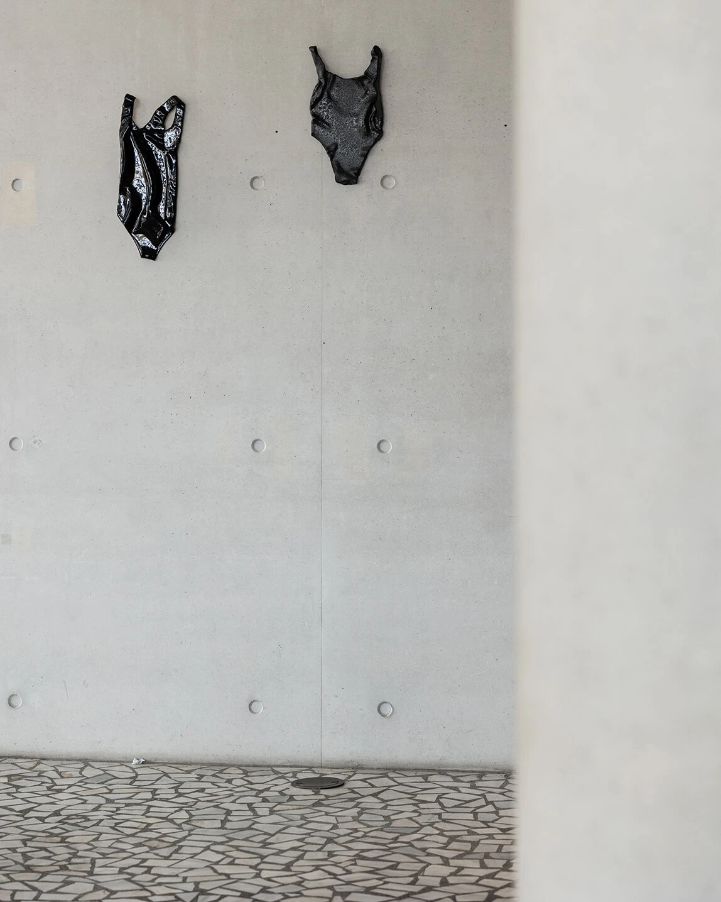

How to dive if you're afraid of the whale
2023Bela Tarr films the arrival of a whale that is rumoured to bring chaos. The residents are afraid, as the majestic volume of its dead body signifies the unknown threat of an impending disaster. How can one dive into water in which a large beast is lurking underneath wreaking fear? An intake of breath is required to read something which doesn't hold meaning but can be inhaled. It is the moment of exhaustion of breath that releases beyond meaning, the feeling of things. That's where poetry reopens the indefinite. Between the gaps the words create, in opposition to the wholeness of the whale, fireflies transmit their sporadic signal. Light appears once again. And hope rejuvenates, it's not over yet. In the face of a slow cancellation of the future, between nostalgia and anxiety, anticipation and action, there, where there are no more words to be uttered, unfolds a melancholy of resistance.

